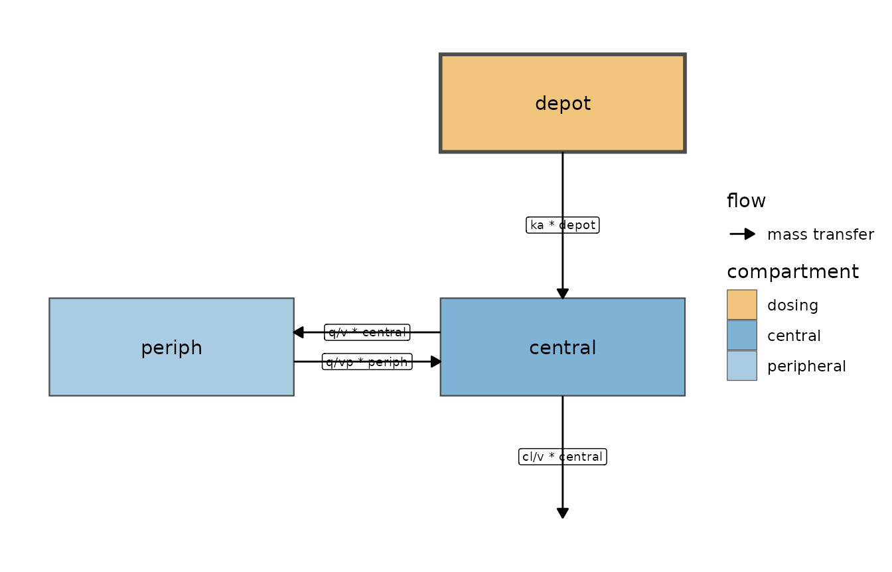
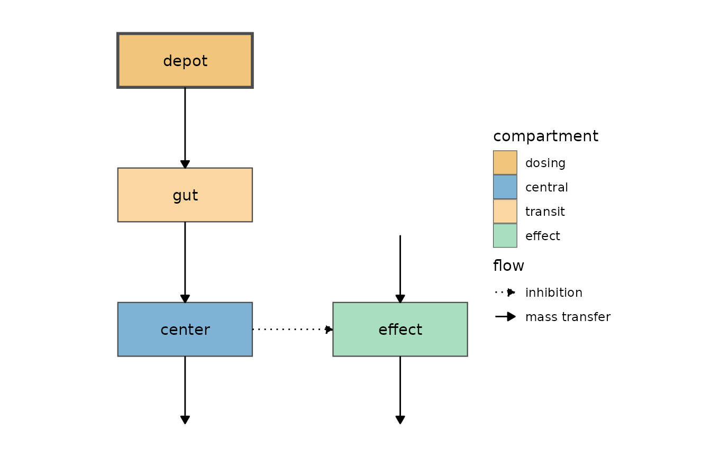
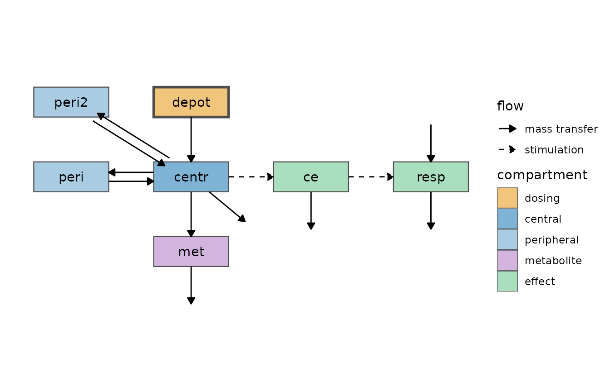
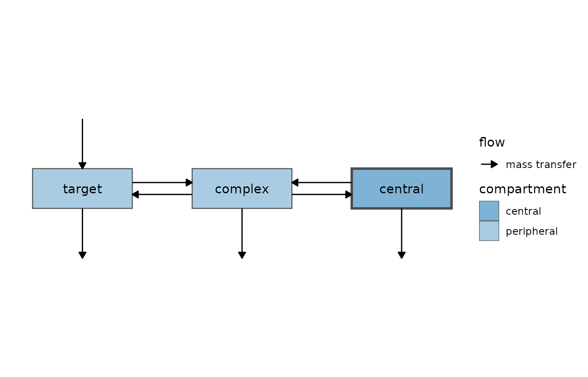
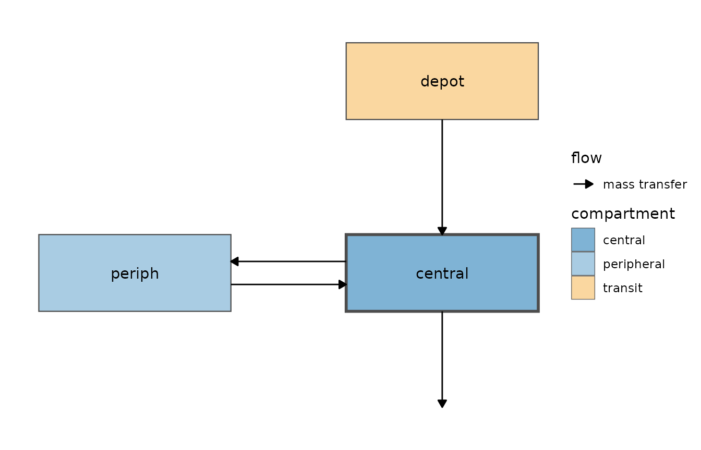
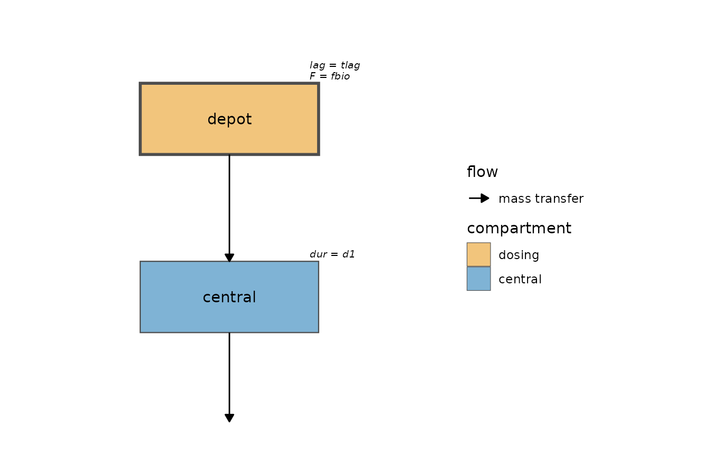
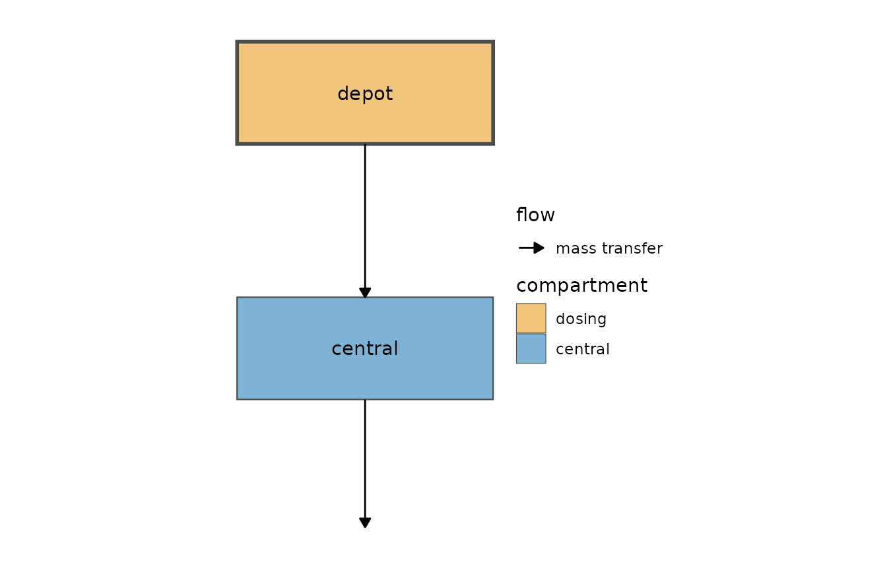

A compartment diagram is often the fastest way to explain a model in
a report or to check that the equations say what you meant.
nlmixr2plot can draw one directly from a model’s
differential equations:
-
modelGraph()parses the equations into a graph of compartments and flows. -
modelDiagram()lays that graph out following common pharmacometric conventions and draws it.
A first diagram
Any model function, rxode2 model, rxode2
user interface object or fitted nlmixr2 object can be
diagrammed. Here is a two-compartment model with first-order
absorption:
two.cmt <- function() {
ini({
tka <- log(1.5)
tcl <- log(3)
tv <- log(20)
tq <- log(2)
tvp <- log(40)
add.sd <- 0.2
})
model({
ka <- exp(tka)
cl <- exp(tcl)
v <- exp(tv)
q <- exp(tq)
vp <- exp(tvp)
d/dt(depot) <- -ka * depot
d/dt(central) <- ka * depot - cl / v * central - q / v * central +
q / vp * periph
d/dt(periph) <- q / v * central - q / vp * periph
cp <- central / v
cp ~ add(add.sd)
})
}
modelDiagram(two.cmt, engine = "ggplot2")
#> ℹ parameter labels from comments are typically ignored in non-interactive mode
#> ℹ Need to run with the source intact to parse commentsplot() of any rxode2 user interface object
(or compiled rxode2 model) draws the same diagram, so this
is equivalent:
The dosing compartment (depot, drawn with a heavy
border) is on top and feeds the central compartment. The peripheral
compartment, which exchanges mass with central in both
directions, is to the left, and elimination leaves the central
compartment downwards.
Drawing engines
The same graph can be drawn several ways, chosen with
engine:
-
"DiagrammeR"draws an interactive Graphviz widget with the ‘DiagrammeR’ package. This is the default when ‘DiagrammeR’ is installed. -
"ggplot2"returns aggplotobject that can be themed, saved withggplot2::ggsave()or combined with other plots. It needs no extra packages. -
"dot"returns the Graphviz DOT source as a string, to edit or to render with any Graphviz tool.
modelDiagram(two.cmt, engine = "DiagrammeR")
#> ℹ parameter labels from comments are typically ignored in non-interactive mode
#> ℹ Need to run with the source intact to parse comments
cat(modelDiagram(two.cmt, engine = "dot"))
#> ℹ parameter labels from comments are typically ignored in non-interactive mode
#> ℹ Need to run with the source intact to parse comments
#> digraph model {
#> graph [layout = neato, splines = true, outputorder = edgesfirst, forcelabels = true];
#> node [shape = box, style = "rounded,filled", fontname = Helvetica];
#> edge [fontname = Helvetica, fontsize = 10];
#> "depot" [pos = "0,1.1!", fillcolor = "#F2C57C", penwidth = 2];
#> "central" [pos = "0,0!", fillcolor = "#7FB3D5"];
#> "periph" [pos = "-1.67,0!", fillcolor = "#A9CCE3"];
#> "depot" -> "central";
#> "central" -> "periph" [dir = both];
#> ".elimination4" [shape = point, style = invis, width = 0.01, pos = "0,-0.77!"];
#> "central" -> ".elimination4";
#> }The default engine can be set once per session:
options(nlmixr2plot.diagram.engine = "ggplot2")Arrows can be labeled with the model terms that drive them:
modelDiagram(two.cmt, engine = "ggplot2", labels = TRUE)
#> ℹ parameter labels from comments are typically ignored in non-interactive mode
#> ℹ Need to run with the source intact to parse comments
The graph behind the diagram
modelGraph() returns the parsed graph, which is useful
for checking how the equations were interpreted (or for drawing it some
other way):
g <- modelGraph(two.cmt)
#> ℹ parameter labels from comments are typically ignored in non-interactive mode
#> ℹ Need to run with the source intact to parse comments
g
#> nlmixr2 model graph
#>
#> compartments:
#> name role dosing
#> depot dosing TRUE
#> central central FALSE
#> periph peripheral FALSE
#>
#> flows:
#> from to type sign label
#> depot central transfer 1 ka * depot
#> central periph transfer 1 q/v * central
#> periph central transfer 1 q/vp * periph
#> central (output) elimination -1 cl/v * centralThe nodes data frame gives each compartment’s role and
layout position, and the edges data frame lists every flow.
A graph can be passed straight to modelDiagram() or
plot():
plot(g, engine = "ggplot2")How the equations are read
Each d/dt() equation is split into signed additive terms
(products are distributed over sums), and then:
-
Mass transfer: a term subtracted from one
compartment and added, identically, to another moves mass between them.
The order of factors does not matter (
ka*depotmatchesdepot*ka), and first-order, zero-order and enzyme-driven rates are all recognized. -
Elimination: a remaining loss that contains the
compartment’s own amount (like
cl/v*centralor Michaelis-Mentenvmax*C/(km + C)), or that depends on no compartment at all (a zero-order loss). -
Input: a remaining gain that depends on no other
compartment: a zero-order
kin, or self-dependent growth likekg*Aind/dt(A). -
Interaction: a term that depends on another
compartment without moving mass, like an effect compartment or a
pharmacodynamic stimulation or inhibition. It is drawn dashed. Its
direction comes from the equation: inhibition when the term decreases as
the driving compartment increases (including
1 - emax*C/(ec50 + C),kin/(1 + C)andexp(-k*C)forms), stimulation when it increases, and “modulation” when the direction cannot be determined.
Intermediate variables (like cp <- central/v) are
followed, if/else blocks and
ifelse() keep their conditions, and residual error lines
are ignored.
Pharmacodynamic models
Compartments that interact with the pharmacokinetic model without mass transfer go to the right, with their own inputs above and outputs below. Here is an indirect response (turnover) model where the drug inhibits the production of the response:
pk.turnover <- function() {
ini({
tktr <- log(1)
tka <- log(1)
tcl <- log(0.1)
tv <- log(10)
poplogit <- 2
tec50 <- log(0.5)
tkout <- log(0.05)
te0 <- log(100)
prop.err <- 0.1
pdadd.err <- 10
})
model({
ktr <- exp(tktr)
ka <- exp(tka)
cl <- exp(tcl)
v <- exp(tv)
emax <- expit(poplogit)
ec50 <- exp(tec50)
kout <- exp(tkout)
e0 <- exp(te0)
DCP <- center / v
PD <- 1 - emax * DCP / (ec50 + DCP)
effect(0) <- e0
kin <- e0 * kout
d/dt(depot) <- -ktr * depot
d/dt(gut) <- ktr * depot - ka * gut
d/dt(center) <- ka * gut - cl / v * center
d/dt(effect) <- kin * PD - kout * effect
cp <- center / v
cp ~ prop(prop.err)
effect ~ add(pdadd.err)
})
}
modelDiagram(pk.turnover, engine = "ggplot2")
#> ℹ parameter labels from comments are typically ignored in non-interactive mode
#> ℹ Need to run with the source intact to parse comments
The transit compartment gut stacks between the dosing
compartment and the central compartment. The response has a zero-order
input (kin) above it, an elimination below it, and a dotted
arrow from center: the drug inhibits the response,
because PD decreases as the concentration increases. With
‘DiagrammeR’ the inhibition is drawn with a “tee” arrow head:
modelDiagram(pk.turnover, engine = "DiagrammeR")
#> ℹ parameter labels from comments are typically ignored in non-interactive mode
#> ℹ Need to run with the source intact to parse commentsA more involved example, with a metabolite, two peripheral compartments, an effect compartment and a response driven by the effect compartment:
pkpd <- rxode2::rxode2({
C2 <- centr / V2
C3 <- peri / V3
C4 <- peri2 / V4
d/dt(depot) <- -KA * depot
d/dt(centr) <- KA * depot - CL * C2 - Q * C2 + Q * C3 - Q2 * C2 + Q2 * C4 -
kmet * centr
d/dt(peri) <- Q * C2 - Q * C3
d/dt(peri2) <- Q2 * C2 - Q2 * C4
d/dt(met) <- kmet * centr - kelm * met
d/dt(ce) <- ke0 * (C2 - ce)
d/dt(resp) <- kin - kout * (1 - ce / (ec50 + ce)) * resp
})
modelDiagram(pkpd, engine = "ggplot2")
Target-mediated drug disposition
Binding and unbinding are recognized as mass transfer from both binding partners into the complex (and back):
tmdd <- rxode2::rxode2({
d/dt(central) <- -kel * central - kon * central * target + koff * complex
d/dt(target) <- ksyn - kdeg * target - kon * central * target +
koff * complex
d/dt(complex) <- kon * central * target - koff * complex - kint * complex
})
modelGraph(tmdd, dosing = "central")
#> nlmixr2 model graph
#>
#> compartments:
#> name role dosing
#> central central TRUE
#> target peripheral FALSE
#> complex peripheral FALSE
#>
#> flows:
#> from to type sign label
#> central complex transfer 1 kon * central * target
#> target complex transfer 1 kon * central * target
#> complex central transfer 1 koff * complex
#> complex target transfer 1 koff * complex
#> central (output) elimination -1 kel * central
#> (input) target input 1 ksyn
#> target (output) elimination -1 kdeg * target
#> complex (output) elimination -1 kint * complex
modelDiagram(tmdd, dosing = "central", engine = "ggplot2")
Dosing compartments
Dosing compartments are detected from the dosing records of the data:
for a fitted model this is the data it was fit to, and for other models
it can be supplied with data. Both numeric and named
cmt values are understood:
d <- data.frame(
id = 1, time = c(0, 0, 1, 2),
amt = c(100, 50, 0, 0), evid = c(1, 1, 0, 0),
cmt = c("depot", "central", "central", "central"), dv = 0
)
modelGraph(two.cmt, data = d)$nodes
#> ℹ parameter labels from comments are typically ignored in non-interactive mode
#> ℹ Need to run with the source intact to parse comments
#> name role dosing x y annotation
#> 1 depot dosing TRUE 0 1
#> 2 central central TRUE 0 0
#> 3 periph peripheral FALSE -1 0With no data, the first compartment (rxode2’s default
dosing compartment) is assumed. The dosing compartments can also be
given directly:
modelDiagram(two.cmt, dosing = "central", engine = "ggplot2")
#> ℹ parameter labels from comments are typically ignored in non-interactive mode
#> ℹ Need to run with the source intact to parse comments
For a fit, modelDiagram(fit) uses the fitted model and
data:
fit <- nlmixr2(two.cmt, nlmixr2data::theo_sd, est = "focei")
modelDiagram(fit)Dosing properties and delays
Dosing properties set in the model
(lag()/alag(),
f()/F(), rate() and
dur()) do not change the flows, so they are shown as an
annotation next to their compartment (compartments without them are left
blank). Initial conditions like central(0) <- 0 do not
change the diagram.
pk.lag <- rxode2::rxode2({
d/dt(depot) <- -ka * depot
alag(depot) <- tlag
f(depot) <- fbio
d/dt(central) <- ka * depot - cl / v * central
dur(central) <- d1
})
modelGraph(pk.lag)
#> nlmixr2 model graph
#>
#> compartments:
#> name role dosing annotation
#> depot dosing TRUE lag = tlag; F = fbio
#> central central FALSE dur = d1
#>
#> flows:
#> from to type sign label
#> depot central transfer 1 ka * depot
#> central (output) elimination -1 cl/v * central
modelDiagram(pk.lag, engine = "ggplot2")
A delay() keeps the meaning of what it delays:
ka*delay(depot, tlag) in the destination still matches
-ka*depot in the source (a delayed transfer), and a delayed
concentration driving an effect keeps the direction of the
concentration.
linCmt() models
Models written with linCmt() are converted to their ODE
form with rxode2::linToOde() before they are diagrammed
(this requires a version of ‘rxode2’ that provides it):
one.cmt <- function() {
ini({
tka <- 0.45
tcl <- 1
tv <- 3.45
add.sd <- 0.7
})
model({
ka <- exp(tka)
cl <- exp(tcl)
v <- exp(tv)
linCmt() ~ add(add.sd)
})
}
modelDiagram(one.cmt, engine = "ggplot2")
#> ℹ parameter labels from comments are typically ignored in non-interactive mode
#> ℹ Need to run with the source intact to parse comments
Limitations
The diagram is only as good as the parsing of the equations, so a few conventions matter:
- Mass transfer is only detected when the same term is subtracted from the source and added to the destination. A transfer scaled in only one of the equations (for example a volume or stoichiometric conversion) is drawn as an elimination plus an interaction.
- A gain driven only by another compartment (like
ke0*cpinto an effect compartment) is represented by the dashed interaction arrow alone. - The layout is automatic; for publication-quality tweaks, start from
the DOT source (
engine = "dot") or theggplotobject and adjust it.